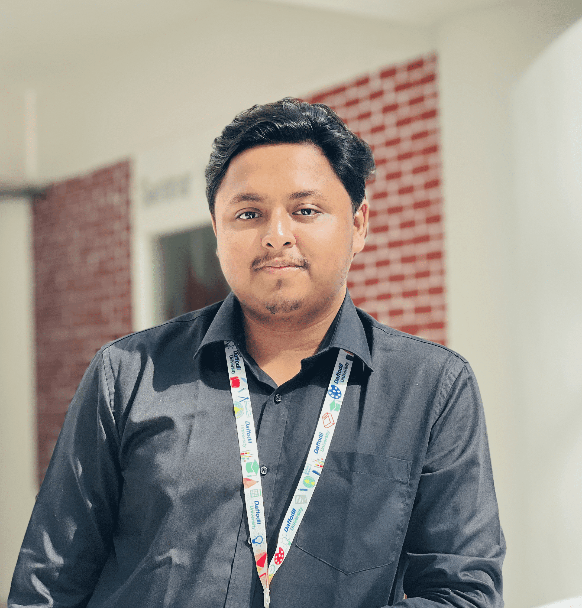

MD. ZUBAYER ALAM (JAMI)
Objective
I'm a passionate and dedicated web developer with a knack for
creating elegant and efficient web solutions. With a strong
foundation in both front-end and back-end technologies, I
strive to build websites and applications that are not
only visually appealing but also highly functional and
user-friendly.
Education
2021 - Present
BSc. in Computing and Information System,
Daffodil International University, Biruliya, Savar, Dhaka
2018 - 2020
H.S.C
Khilgaon Govt. Colony Higher Secondary School, Dhaka
Background: Business Studies
2018
S.S.C
National Ideal School and College, Dhaka
Background: Science
Extra Curricular Work Experience
DIU Voluntary Service Club
DIU CIS Club
- 2023 - Present
Founder Joint Secretary
Daffodil International University Debating Club
Daffodil Prothom Alo Bondhushava
Bangladesh Scouts
- 2018 - Present
Rover
Samatat Open Scout Group
Skills
Programming
- C:
- C++:
- Java:
- Python:
Operating System
- Windows:
- Kali linux:
- Ubuntu:
Web Development
- HTML:
- CSS:
- JavaScript:
- PHP:
- MySQL:
Microsoft Office
- Word:
- Excel:
- PowerPoint:
Language
- Bangla:
- English:
Accomplishments and Certifications
Volunteer at CYBER SECURITY AWARENESS DAY (2022)
Cyber Security Center, Daffodil International University
Volunteer at INTERNATIONAL LITERACY DAY (2021)
Samatat Open Scout Group and Ahsania Mission (Collaboartion)
Organizer of 41st & 42nd ROVER MATE COURSE (2021)
Samatat Open Scout Group, Bangladesh Scouts
Others